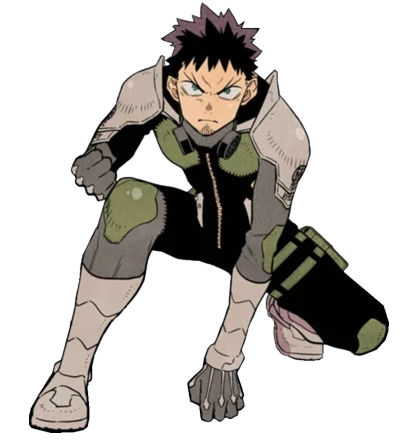
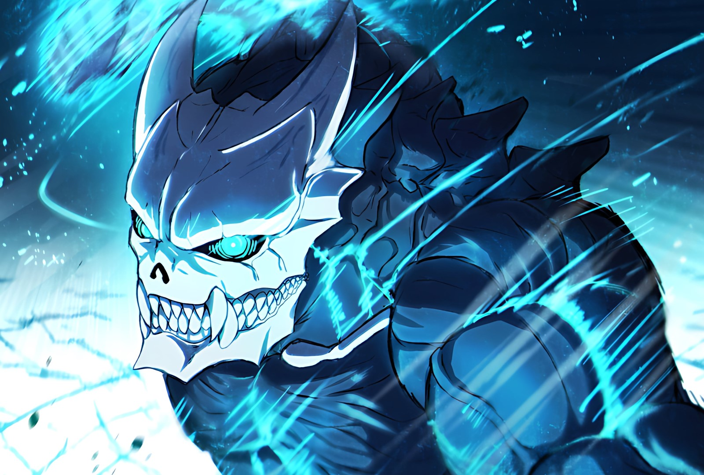

Sobre Kaiju No. 8
Na animação japonesa “Kaiju No. 8”, o Japão tem sido assolado por vilões e monstros gigantescos que, ao lutarem contra heróis, deixam a cidade destruída. Nisso, cabe a um time especial limpar a cidade para que os civis possam retornar a sua rotina. É um anime baseado no mangá de Naoya Matsumoto, lançado em 2020 de graça no aplicativo Shonen Jump+, e depois reeditado em volumes impressos. Até o momento, o mangá está no seu capítulo 104. Com uma premissa cheia de ação e pitadas de humor, a série se tornou sensação, tendo 13 milhões de cópias em circulação desde o seu lançamento, sendo vendido no Brasil pela editora Panini.
Sobre o que se trata Kaiju No.8
O anime se passa em um mundo cheio de monstros gigantes e que se tornou comum que eles causem desastres por onde passam. O Japão é o local com a maior densidade de kaijus, nomes dados a esses monstros, no mundo. Basicamente, toda semana tem um Godzilla novo para destruir Tóquio. Para se defender, é criada uma força-tarefa que tenta impedir os ataques e, quando necessário, luta contra eles usando armaduras especiais.
Os kaijus mais fortes ou com habilidades especiais são categorizados por números. Os restos desses monstros são usados para criar armaduras especiais que apenas alguns indivíduos são compatíveis para usar.
É nesse mundo que conhecemos Kafka Hibino, um jovem que acompanhou por toda sua infância o surgimento dos kaijus e o impacto deles na própria sociedade. Junto de sua melhor amiga, Mina Ashiro, Kafka tinha um sonho de crescer e se tornar membro da Força de Defesa do Japão, podendo lutar contra os monstros e defender a humanidade. Só que, obviamente, as coisas não saem como ele deseja.
Com o passar dos anos, Kafka e Mina acabam se distanciando e seguindo rumos diferentes em suas vidas. Enquanto a garota se tornou a capitã da 3ª Divisão da Força de Defesa, Hibino trabalha na Monster Sweeper Inc, uma empresa especializada em limpar os destroços depois das lutas, sendo uma espécie de faxineiro do desastre.
Kafka Hibino
Em um mundo assolado por criaturas ameaçadoras conhecidas como "Kaiju", Kafka Hibino sempre sonhou em se alistar na Força de Defesa do Japão para derrotá-los. Kafka prometeu à sua amiga de infância, Mina Ashiro, que eles derrotariam esses monstros juntos.
Modo Kaiju
Como Kafka Hibino virou um Kaiju?
Durante um ataque de um kaiju, Kafka acaba ingerindo um pedaço do monstro, ganhando a habilidade de se transformar em um, que acaba recebendo o título de Kaiju No.8. Escondendo isso de todos, ele resolve se candidatar para a Força de Defesa, usando seus novos poderes para realizar o seu sonho de infância.